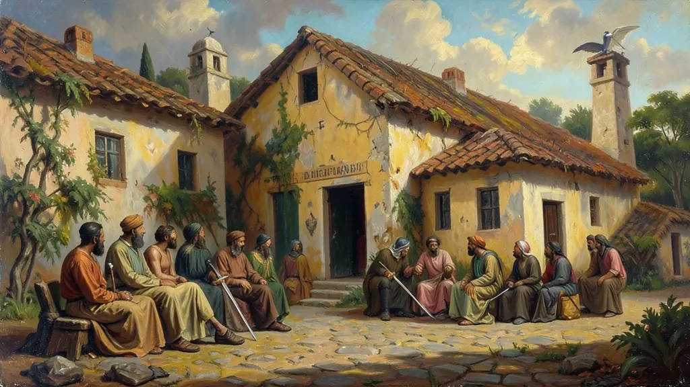
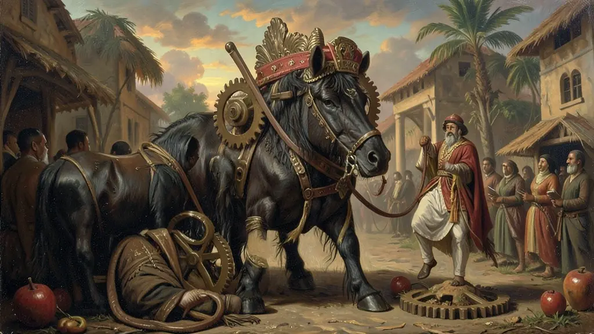
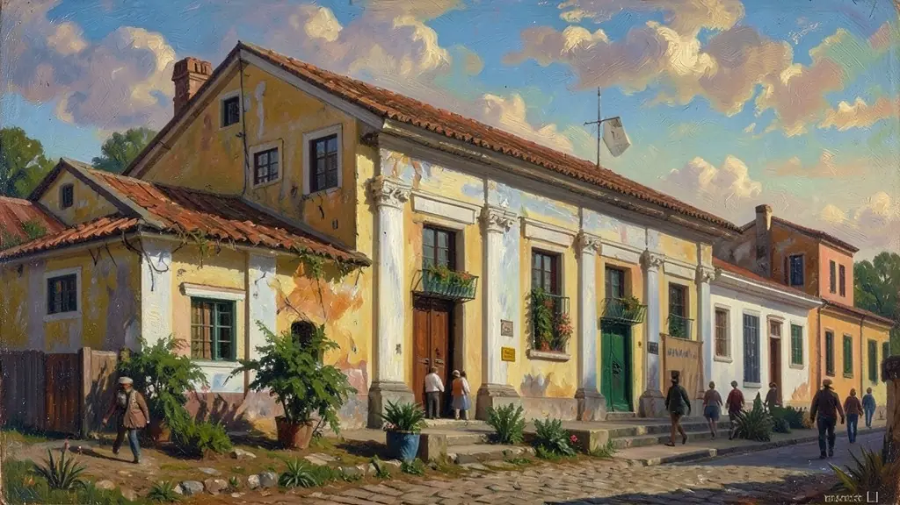

Capítulo 01
1. A República da Espada e a Constituição de 1891
Deodoro da Fonseca proclamou a república, mas governou com punho de ferro. Floriano Peixoto, seu sucessor, enfrentou a Revolta da Armada e a Revolução Federalista para manter a unidade nacional. A Constituição de 1891 foi o documento que legalizou o federalismo, dando aos estados o direito de ter seus próprios impostos e exércitos (Polícias Militares), o que pavimentou o caminho para o poder dos governadores.

Capítulo 02
2. A Engrenagem do Poder: Coronelismo e Governadores
O Coronel era o elo de ligação entre o povo e o Estado. Ele era o 'pai' que trazia o poço e a escola, mas exigia o voto aberto na seção eleitoral. A Política dos Governadores eliminou qualquer oposição real, pois as 'Comissões Verificadoras de Poderes' degolavam (cassavam) qualquer deputado eleito que não fosse aliado do governador. Era a ditadura dos governadores disfarçada de democracia parlamentar.

Capítulo 03
3. O Café e o Convênio de Taubaté
O café representava 70% das exportações brasileiras. Quando o preço caía, os produtores paulistas usavam sua influência federal para forçar o Estado a comprar a produção excedente. Isso socializava as perdas (a dívida era paga por todos os brasileiros) e privatizava os lucros (os fazendeiros continuavam ricos). Foi o maior exemplo de intervenção estatal em benefício de uma elite na história do Brasil.

Capítulo 04
4. Revoltas no Campo e na Cidade: O Grito dos Excluídos
Canudos (Antônio Conselheiro) e Contestado (José Maria) não foram movimentos 'atrasados', mas de resistência à tomada de terras e à fome. Na capital, o 'Bota-Abaixo' de Pereira Passos empurrou a população pobre para os morros, criando a favelização. A Revolta da Chibata (João Cândido, o Almirante Negro) mostrou que a Marinha ainda tratava marinheiros como escravos, 20 anos após a abolição. Eram as fraturas expostas de uma república que não cumpriu suas promessas de igualdade.
Capítulo 05
5. O Fim da República Velha: Tenentismo e 1922
O ano de 1922 foi o começo do fim. A Semana de Arte Moderna rompeu com os padrões europeus defendidos pelas oligarquias. O levantamento dos 18 do Forte de Copacabana marcou o início do Tenentismo — jovens oficiais que queriam o voto secreto e o fim do café com leite. A Coluna Prestes e a fundação do Partido Comunista (PCB) no mesmo ano mostravam que novos atores queriam participar do jogo político, culminando no golpe de 1930.
A implantação da República brasileira em 1889 foi um golpe militar articulado pela elite agrária que excluiu maciçamente a participação popular. Segundo José Murilo de Carvalho, o povo assistiu à derrubada da monarquia 'bestializado', sem compreender ou participar do processo político desenhado nos quartéis e nas fazendas de café.
Durante a Primeira República (1889-1930), o acordo oligárquico (notadamente as repúblicas do 'Café com Leite') dominou a gestão macroeconômica, direcionando recursos públicos massivamente para a proteção e valorização do café, enquanto as nascentes indústrias e a precarizada classe operária urbana sofriam profunda negligência estatal.
Para o Exame, é essencial enxergar as contradições desse período: o discurso de modernidade (como a reconstrução de Pereira Passos no Rio) disfarçava o autoritarismo e a exclusão crônica dos miseráveis favelados, o que alimentou inúmeras revoltas urbanas e rurais contra uma República que governava apenas para poucos.
Fonte: CARVALHO, José Murilo de. Os Bestializados: O Rio de Janeiro e a República que não foi. Cia das Letras, 1987.
Atividades interativas
Questões para fixar
A Política dos Governadores, instituída pelo presidente Campos Sales (1898-1902), tinha como principal objetivo:
A Guerra de Canudos (1896-1897) foi retratada por Euclides da Cunha como uma luta entre o 'Brasil do Litoral' e o 'Brasil do Sertão'. Um fator determinante para o massacre da comunidade foi: